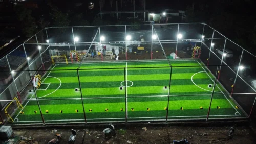

The Journey of GreenField Turfs

It all started with a simple passion for sports and a growing frustration with the lack of quality playing fields in our city. As avid football and cricket players, my friends and I often found ourselves travelling miles just to find a decent pitch, only to be turned away because it was fully booked or poorly maintained.
That was the spark that ignited GreenField. We envisioned a place where sports enthusiasts could come together, play on premium quality artificial grass, and enjoy world-class amenities right in their neighborhood.
Our Mission
Our mission is to foster a local sports community by providing accessible, top-tier sporting facilities. We believe that a good game can relieve stress, build teamwork, and promote a healthier lifestyle. That’s why we spared no expense in sourcing FIFA-approved turf and installing state-of-the-art LED floodlights to ensure our arenas are game-ready, 24/7.
Looking Forward
Today, GreenField is more than just a booking website or a physical ground; it's a community hub. We host local tournaments, coaching camps for kids, and corporate leagues. As we continue to grow, our commitment remains the same: bringing the joy of the game to everyone.